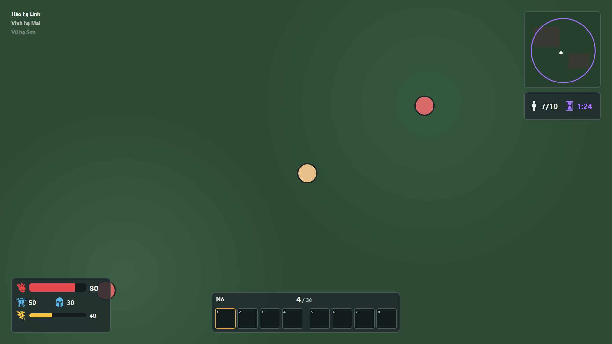
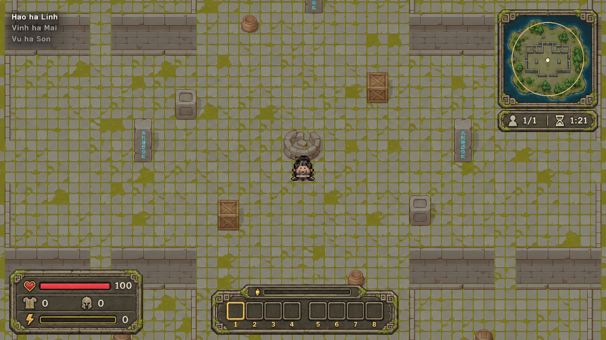
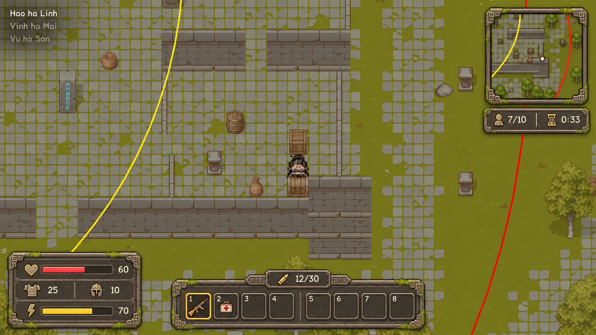
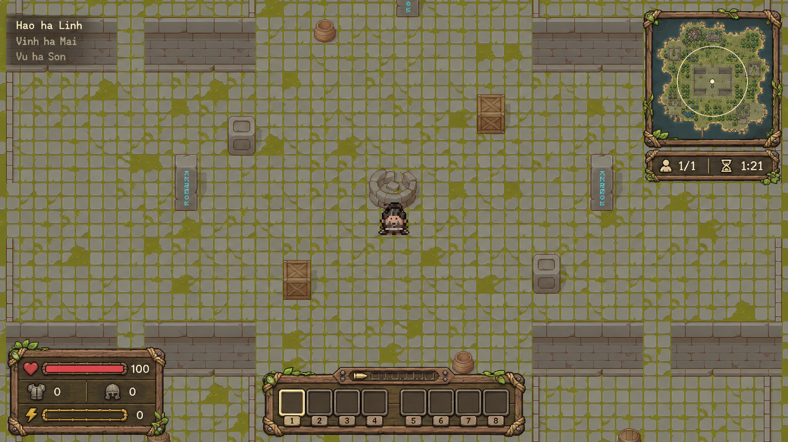
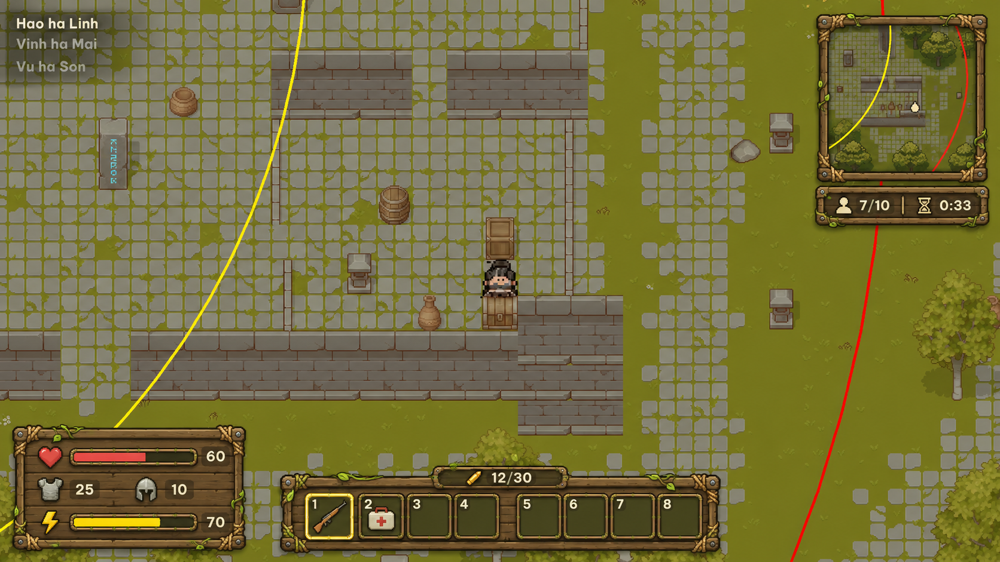
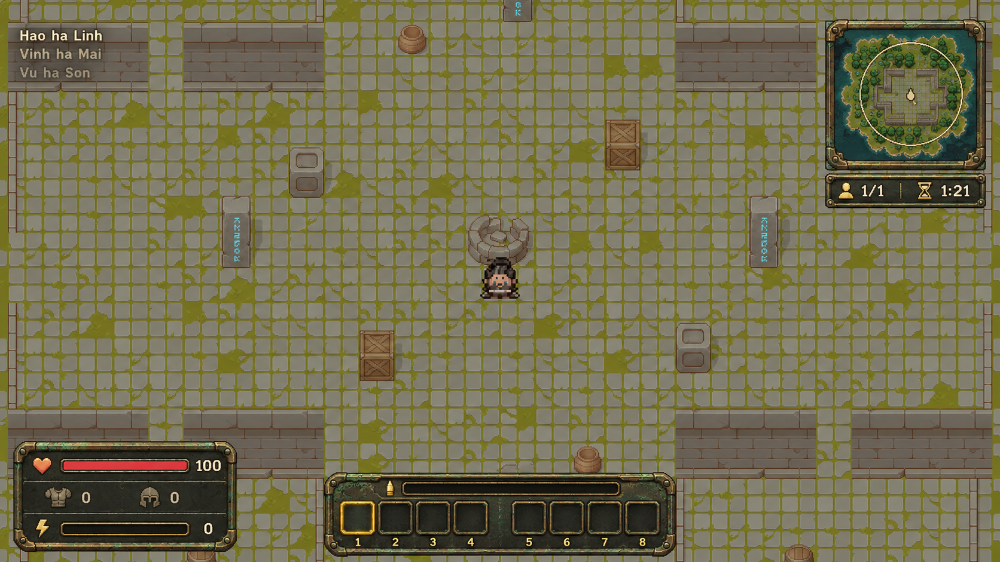
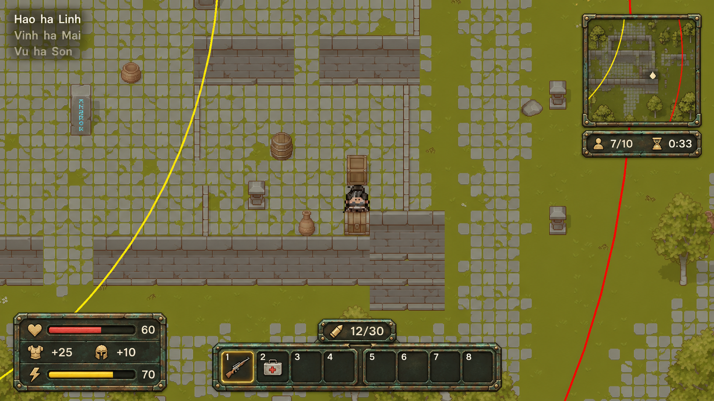
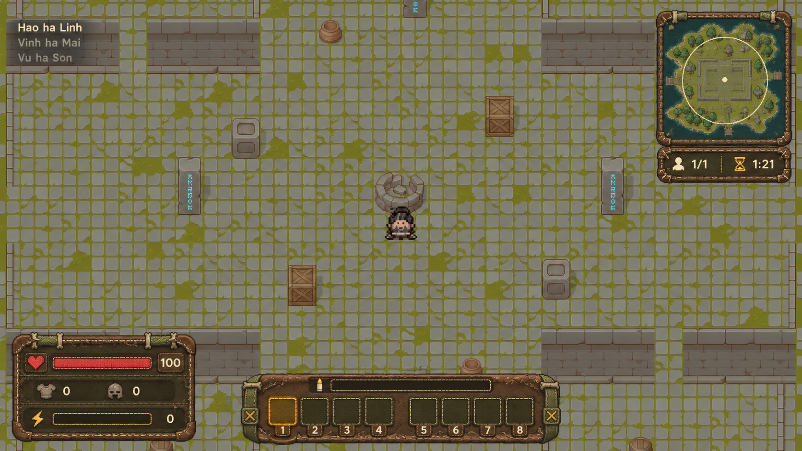
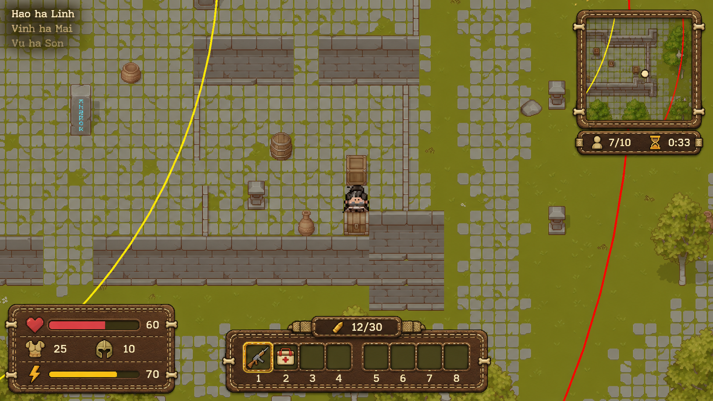

Tham chiếu
Ảnh gốc T-010 (đầu trận, bo thu) và mock bố cục B (art-ux, schematic).



World giữ nguyên như build (ảnh T-010), chỉ vẽ lại lớp HUD theo bố cục B. Concept để chọn, chưa vào Assets. Ảnh 1672x941. Mỗi hàng: tham chiếu (gốc T-010 hoặc mock B), cảnh đầu trận, cảnh bo thu.
Ảnh gốc T-010 (đầu trận, bo thu) và mock bố cục B (art-ux, schematic).

Tấm đá rêu viền hoa văn khắc, icon khắc nhạt có nét vàng; hợp nhất với nền đá của world.


Ván gỗ cũ buộc dây thừng và đinh, dây leo cuốn góc; ấm, nổi trên nền đá xám.


Đồng oxy hóa lớp gỉ xanh, đinh tán; icon dập kim loại vàng, gần kiểu di tích.


Da khâu có đường chỉ, nút xương, dây vải; tông nâu olive, mềm hơn các bản còn lại.


| Mục | Kết quả |
|---|---|
| World giữ nguyên | Đạt cả 8 ảnh: soi mắt thấy tường, hòm, chum, cột, nhân vật, vòng bo, vùng đỏ đúng vị trí; đo độ lệch vùng giữa màn (trung bình sai khác màu theo ô, thang 0-255): 3,05 đến 3,72. Đối chiếu: vẽ lại world ở T-011 cho 28 đến 80. |
| Đúng bố cục B | Vitals 3 hàng (máu: thanh + số; giáp, mũ: icon + số; Adrenaline: thanh + số), không tên món; Quick bar 8 ô bó sát; minimap có bản đồ; Match status icon + số; killfeed 3 dòng chữ. Đạt cả 8. |
| Số liệu đọc được | Đạt: 100, 60, 25, 10, 70, 12/30, 7/10, 0:33, 1/1, 1:21 đọc rõ ở ảnh 1672x941. Chưa kiểm ở 1920x1080 thật. |
| Lệch nhỏ (chấp nhận trong concept) | C bo thu hiện "+25" "+10" (thêm dấu +). Killfeed viết "Hao ha Linh" không dấu (GPT vẽ tiếng Việt kém; chữ thật do Unity render). Minimap do GPT tự vẽ bản đồ, không phải bản đồ thật. Hàng ammo strip lúc đầu trận rỗng/không số. |
| Vẽ lại | B (cả 2 cảnh) và D đầu trận ra tỉ lệ 1717x916 lần đầu; đã vẽ lại thành 1672x941 và chấm lại. |
| Chưa làm | Cảnh menu chính (không bắt buộc, chưa vẽ). Chưa kiểm tương phản bằng script. Chưa có qa chấm chéo. |